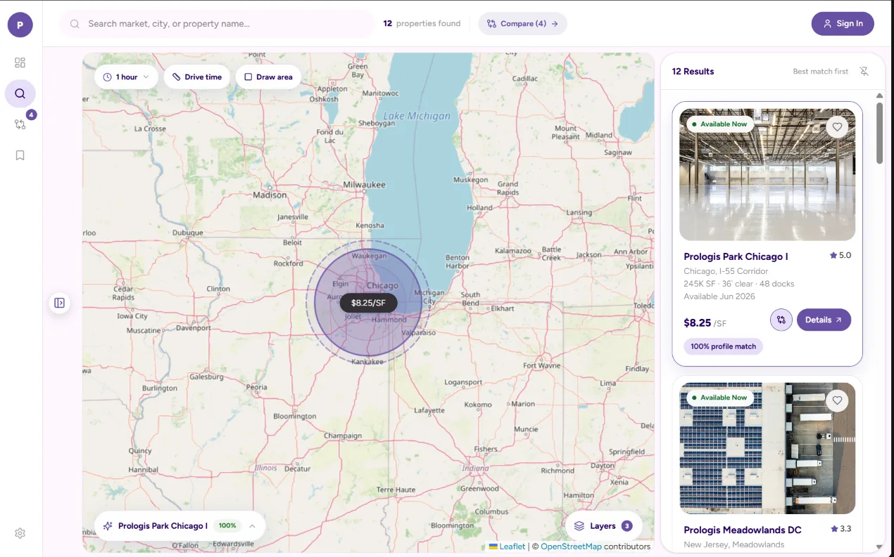
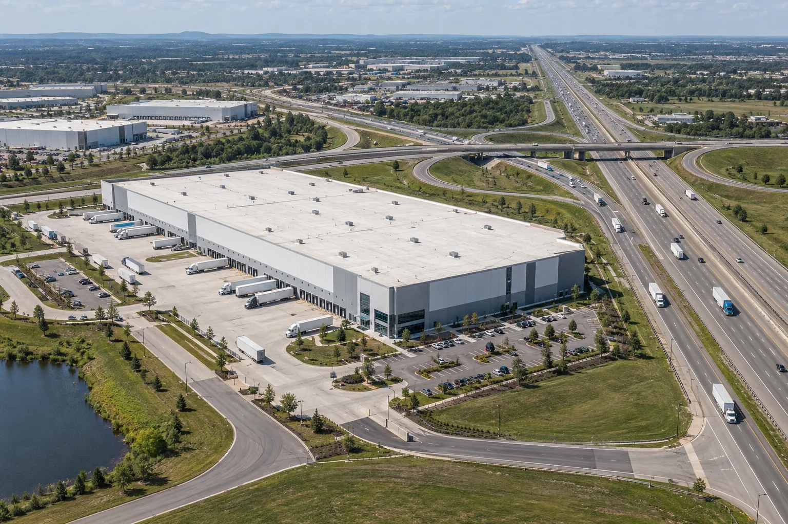
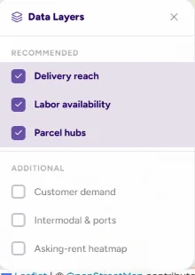
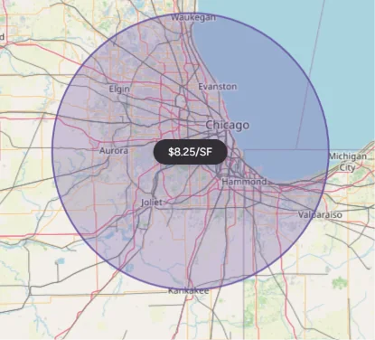

Access is oversimplified
“Near a highway” does not reveal the actual truck route, interchange, restrictions, or time lost in traffic.
01 — Logistics real estate · Product design
A map-led decision tool that helps logistics teams evaluate properties through real operating conditions—not just rent, size, and a pin on a map.
View the prototype
The main workspace keeps market search, delivery reach, map layers, comparison, selected-property context, and ranked property results visible in one connected screen.
The brief
Warehouse searches often begin with square footage and asking rent, while the operational consequences remain scattered across maps, spreadsheets, broker PDFs, and local research. The product brings property and network intelligence into one connected map so teams can shortlist with evidence.
02 — The problem
“Near a highway” does not reveal the actual truck route, interchange, restrictions, or time lost in traffic.
Customer, store, supplier, and service-area data rarely sit beside available properties.
Labor, power, ports, parcel hubs, congestion, and risk are researched in separate tools.
Teams can see what is available, but not why one property fits—or where it falls short.
03 — Who it is for
E-commerce operatorsPrioritize consumer reach, parcel hubs, fulfillment speed, peak labor, and returns.
3PL providersCompare client coverage, freight corridors, network flexibility, yard capacity, and carrier access.
ManufacturersEvaluate suppliers, power, utilities, workforce skills, rail, ports, and expansion land.
RetailersBalance store replenishment, market coverage, reverse logistics, and same-day delivery.
Brokers and tenant representativesTranslate client requirements into evidence-backed shortlists and comparisons.
04 — The insight
“The listing tells me what the building is. It does not tell me what the location will cost us every day.”
Representative user tensionUsers need to understand truck access, service reach, workforce, freight connections, demand, and risk without changing tools for every question.
Every layer should answer a business question, update the shortlist, and explain the effect on a property’s fit.
05 — Product approach
Capture the persona, required building type, locations served, transport mode, labor needs, power requirements, and non-negotiables.
Search a city or market, define a drive-time or delivery-reach area, and overlay customers, stores, suppliers, or client locations.
Reveal highways, labor, parcel hubs, ports, rail, congestion, infrastructure, rent, and risk directly around each listing.
Rank properties against the same requirements and show the reason for each match, trade-off, and warning.
06 — Product principle
The map is not decoration. It is the primary analysis surface: property cards, network layers, filters, reach areas, and comparison tools stay synchronized so users can see the consequence of every choice.
07 — F1 · Highway connectivity
Highway connectivity replaces vague proximity with a route-aware view of the nearest useful interchange, travel time, freight corridors, and access constraints.

The layer highlights major routes and translates the property’s position into an operational measure that can be compared across the shortlist.
08 — F2 · Labor availability
Labor density turns a location into a realistic workforce catchment by combining supply, commute behavior, competition, and shift accessibility.
The layer shows where the addressable workforce lives and how confidently a location can support current and future shifts.
09 — F3 · Filters and layers

The first group changes with the selected operating profile. An e-commerce user sees delivery reach and parcel hubs; a manufacturer sees power, suppliers, and freight infrastructure.
Size, rent, availability, clear height, docks, yard, trailer parking, cold storage, power, zoning, and sustainability narrow the inventory.
Highways, labor, customers, stores, suppliers, ports, airports, rail, parcel hubs, congestion, risk, and rent heatmaps can be toggled as map layers.
Selected filters remain visible as chips, result counts update immediately, and clearing a layer never removes the user’s underlying property criteria.
10 — The feature system

Switch between drive-time and delivery-window views to understand the customers, stores, and markets a property can realistically serve.
Visualize one-hour, two-hour, same-day, and next-day service areas from a property.
Upload customers, stores, suppliers, and client locations to see coverage and gaps.
Explore ports, airports, rail terminals, intermodal yards, parcel hubs, and freight corridors.
Score each property against operational requirements and expose both strengths and shortfalls.
Evaluate power, utilities, broadband, zoning, congestion, flood, climate, and environmental risk.
Compare finalists side by side, save a shortlist, and create an evidence-backed client view.
11 — Pain points → product response
12 — The decision flow
Select the operating persona and site requirement.
Search a market, city, corridor, or property.
Define drive time, delivery reach, or a custom area.
Overlay customers, stores, suppliers, or clients.
Turn on labor, highways, freight, cost, and risk layers.
Open a property to see its match and shortfalls.
Compare, save, and share the evidence-backed shortlist.
13 — What success looks like
Reduce time spent combining property, transport, labor, and network research.
More shortlisted properties meet the user’s critical operational requirements.
Decision makers can explain why a property wins and where risk remains.
Operators, brokers, and clients evaluate the same evidence in one place.
14 — Product value
The product transforms a property search into an operating-network decision—helping teams reduce transport friction, staffing risk, coverage gaps, and costly lease mistakes before they commit.
Replay feature walkthroughs ↑Reflection
“A logistics map earns trust when every layer answers a business question—and every recommendation explains itself.”